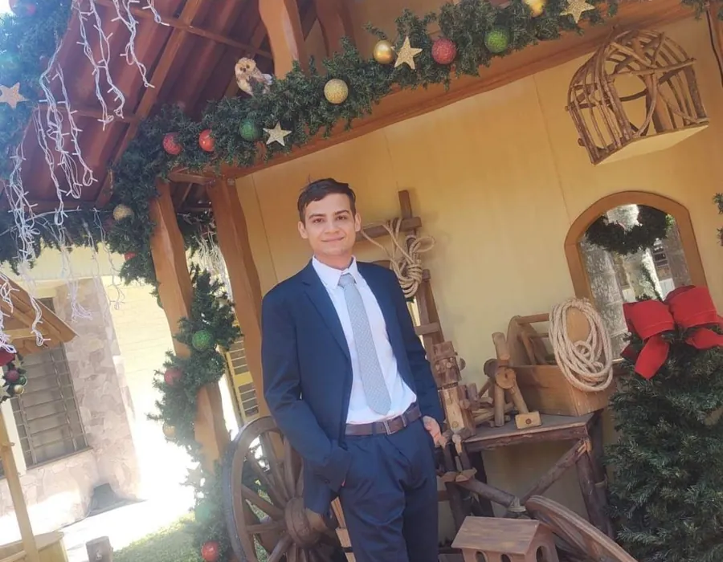

Vitorio Lucas Kuroski
Sobre mim
Sou estudante do curso WDD 131 na BYU-Idaho, aprendendo os fundamentos de HTML, CSS e JavaScript. Gosto de transformar ideias simples em páginas organizadas e fáceis de usar, e este semestre estou construindo, passo a passo, o meu primeiro site pessoal.
Projeto em destaque

Este site é meu projeto em andamento para a disciplina: um espaço para praticar layout com CSS Grid e Flexbox, tipografia com Google Fonts e pequenas interações com JavaScript, como a data exibida no rodapé desta página.